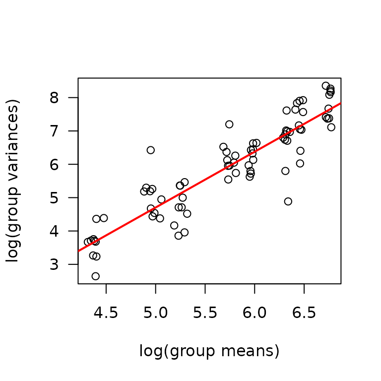
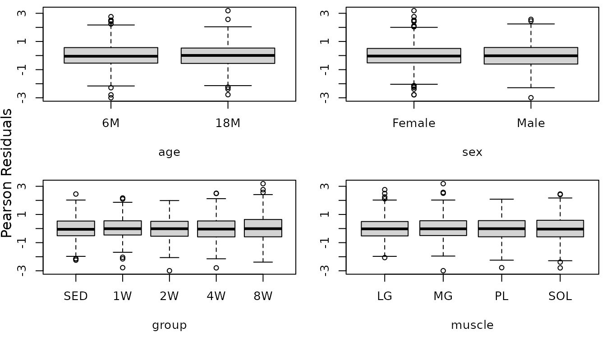
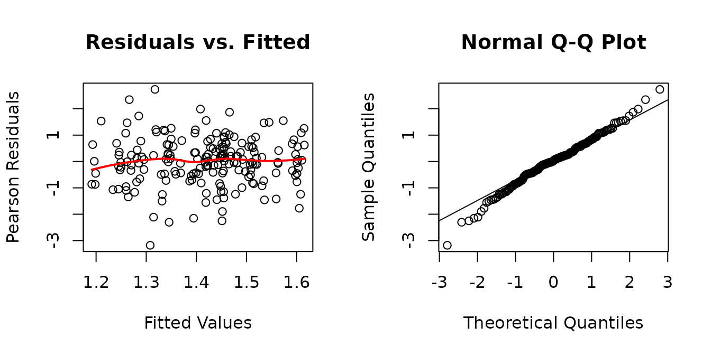
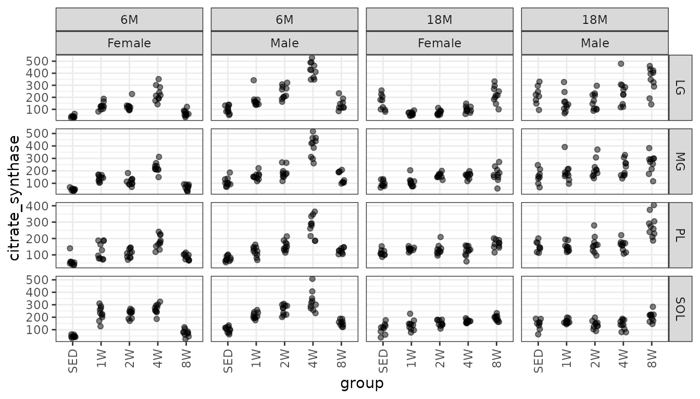
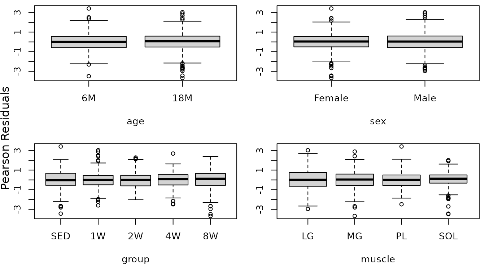
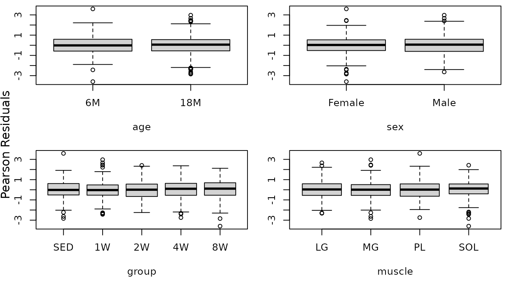

Statistical analyses of muscle-specific measures
Tyler Sagendorf
01 May, 2024
Source:vignettes/MUSCLES_STATS.Rmd
MUSCLES_STATS.Rmd
# Required packages
library(MotrpacRatTrainingPhysiologyData)
library(ggplot2)
library(MASS)
library(dplyr)
library(nlme)
library(emmeans)
library(tibble)
library(tidyr)
library(purrr)
theme_set(theme_bw()) # base plot themeRegression Models
For each rat, measurements were taken from 4 muscles: lateral gastrocnemius, medial gastrocnemius, plantaris, and soleus. These measurements include post-mortem (terminal) muscle mass, mean cross-sectional area, glycogen concentration, capillary contacts, and citrate synthase concentration.
Since we have repeated measures, we will fit linear mixed models (LMMs) with a random intercept for each rat. Since all response variables are strictly positive, we will use an appropriate variance-stabilizing transformation on each response. Weights will be included if we still observe heterogeneity.
Outliers will be inspected and removed if there is a valid reason. We will report all observations that were removed, as well as the reason for doing so, in the final results table.
Terminal Muscle Mass
Mass (mg) of dissected muscles.
ggplot(MUSCLES, aes(x = group, y = term_muscle_mass)) +
geom_point(na.rm = TRUE, alpha = 0.5,
position = position_jitter(width = 0.1, height = 0)) +
facet_grid(muscle ~ age + sex, scales = "free_y") +
theme(axis.text.x = element_text(angle = 90, hjust = 1, vjust = 0.5))
There are two observations with lower weights than expected. However, when we investigated these values, we found that they agree with what was recorded on the data collection sheets. Additionally, any strange values would have been double-checked by the dissectors. Moreover, these observations come from the same group (18M SED male), though they are not from the same rat, so this may be biological.
Note that the variance appears to increase as the mean increases, so we will check the mean-variance relationship.
mv <- MUSCLES %>%
group_by(age, sex, group, muscle) %>%
summarise(mn = mean(term_muscle_mass, na.rm = TRUE),
vr = var(term_muscle_mass, na.rm = TRUE))
fit.mv <- lm(log(vr) ~ log(mn), data = mv)
coef(fit.mv)
#> (Intercept) log(mn)
#> -3.654075 1.671691
plot(log(vr) ~ log(mn), data = mv, las = 1, pch = 1,
xlab = "log(group means)", ylab = "log(group variances)")
abline(coef(fit.mv), lwd = 2, col = "red")
The slope is close to 2, so we will log-transform the response and
use nlme::lme.
fit.term <- lme(fixed = log(term_muscle_mass) ~ age * sex * group * muscle,
random = ~ 1 | pid,
data = MUSCLES,
na.action = na.exclude)
plot_lme(fit.term)There are two outliers. We will investigate further.
out.term <- which(resid(fit.term, type = "pearson") < -5)
out.term.df <- MUSCLES[out.term, ] %>%
dplyr::select(age, sex, group, muscle)
MUSCLES %>%
mutate(isOutlier = 1:n() %in% out.term) %>%
inner_join(out.term.df, by = c("age", "sex", "group", "muscle")) %>%
dplyr::select(isOutlier, iowa_id, group, muscle, term_muscle_mass) %>%
arrange(muscle, term_muscle_mass) %>%
print.data.frame()
#> isOutlier iowa_id group muscle term_muscle_mass
#> 1 TRUE 18M4T18 SED PL 210
#> 2 FALSE 18M8T4 SED PL 297
#> 3 FALSE 18M8T25 SED PL 306
#> 4 FALSE 18M8T8 SED PL 313
#> 5 FALSE 18M8T27 SED PL 321
#> 6 FALSE 18M8T22 SED PL 322
#> 7 FALSE 18M8T9 SED PL 323
#> 8 FALSE 18M4T14 SED PL 329
#> 9 FALSE 18M4T1 SED PL 333
#> 10 FALSE 18M8T19 SED PL 340
#> 11 FALSE 18M8T3 SED PL 342
#> 12 TRUE 18M8T3 SED SOL 73
#> 13 FALSE 18M8T4 SED SOL 130
#> 14 FALSE 18M8T25 SED SOL 138
#> 15 FALSE 18M8T8 SED SOL 140
#> 16 FALSE 18M8T9 SED SOL 141
#> 17 FALSE 18M8T19 SED SOL 149
#> 18 FALSE 18M8T27 SED SOL 152
#> 19 FALSE 18M4T14 SED SOL 152
#> 20 FALSE 18M4T18 SED SOL 153
#> 21 FALSE 18M8T22 SED SOL 158
#> 22 FALSE 18M4T1 SED SOL 167The difference between 18M4T18 PL terminal weight and the second lowest value (297 - 210 = 87) is greater than the range of values when this observation is excluded (342 - 297 = 45). The difference between the 18M8T3 SOL terminal weight and the second lowest value (130 - 73 = 57) is also greater than the range of values when this observation is excluded (167 - 130). In both cases, these values seem unreasonable given the values from other rats. We will also compare the different muscles within these two rats.
MUSCLES %>%
filter(iowa_id %in% c("18M4T18", "18M8T3")) %>%
arrange(iowa_id, muscle) %>%
dplyr::select(iowa_id, group, muscle, term_muscle_mass) %>%
arrange(iowa_id, term_muscle_mass)
#> iowa_id group muscle term_muscle_mass
#> 1 18M4T18 SED SOL 153
#> 2 18M4T18 SED PL 210
#> 3 18M4T18 SED MG 635
#> 4 18M4T18 SED LG 815
#> 5 18M8T3 SED SOL 73
#> 6 18M8T3 SED PL 342
#> 7 18M8T3 SED MG 686
#> 8 18M8T3 SED LG 887Under the assumption that rats will have similar ratios between the terminal masses of the different muscles (i.e., LG/MG ratio should be similar for all rats in the same experimental group), we will flag observations as outlying if they are outside 1.5 times the interquartile range (IQR) above the upper quartile and below the lower quartile. This is how a boxplot identifies potential outliers. Any observations that are outlying in 3/6 pairwise comparisons will be investigated. This would mean that one of the muscles is much lower or much higher than expected. The ratios will be constructed so that the larger muscle is always in the numerator: LG > MG > PL > SOL.
# Identify boxplot outliers
boxplot_outlier <- function(x) {
return(x < quantile(x, 0.25) - 1.5 * IQR(x) |
x > quantile(x, 0.75) + 1.5 * IQR(x))
}
# Need separate columns for each muscle
term_ratios <- MUSCLES %>%
pivot_wider(id_cols = c(iowa_id, age, sex, group),
values_from = term_muscle_mass,
names_from = muscle) %>%
mutate(LG_over_MG = LG / MG,
LG_over_PL = LG / PL,
LG_over_SOL = LG / SOL,
MG_over_PL = MG / PL,
MG_over_SOL = MG / SOL,
PL_over_SOL = PL / SOL) %>%
group_by(age, sex, group) %>%
mutate(across(.cols = contains("_over_"),
.fn = boxplot_outlier,
.names = "{.col}_outlier"),
outlier_total = rowSums(across(contains("_outlier"))),
across(.cols = contains("_over_"),
.fn = ~ ifelse(boxplot_outlier(.x), paste0(round(.x, 1), "*"),
as.character(round(.x, 1))))) %>%
ungroup() %>%
relocate(outlier_total, .after = iowa_id) %>%
arrange(-outlier_total) %>%
group_by(age, sex, group) %>%
mutate(any_outliers = any(outlier_total == 3)) %>%
filter(any_outliers) %>%
dplyr::select(-contains("_outlier"))
print.data.frame(filter(term_ratios))
#> iowa_id outlier_total age sex group LG MG PL SOL LG_over_MG LG_over_PL
#> 1 18M8T3 3 18M Male SED 887 686 342 73 1.3 2.6
#> 2 18M4T18 3 18M Male SED 815 635 210 153 1.3 3.9*
#> 3 18M8T4 0 18M Male SED 764 619 297 130 1.2 2.6
#> 4 18M8T8 0 18M Male SED 804 630 313 140 1.3 2.6
#> 5 18M8T9 0 18M Male SED 871 612 323 141 1.4 2.7
#> 6 18M8T19 0 18M Male SED 881 658 340 149 1.3 2.6
#> 7 18M8T22 0 18M Male SED 865 627 322 158 1.4 2.7
#> 8 18M8T25 0 18M Male SED 836 628 306 138 1.3 2.7
#> 9 18M8T27 0 18M Male SED 815 636 321 152 1.3 2.5
#> 10 18M4T1 0 18M Male SED 885 646 333 167 1.4 2.7
#> 11 18M4T14 0 18M Male SED 833 644 329 152 1.3 2.5
#> LG_over_SOL MG_over_PL MG_over_SOL PL_over_SOL
#> 1 12.2* 2 9.4* 4.7*
#> 2 5.3 3* 4.2 1.4*
#> 3 5.9 2.1 4.8 2.3
#> 4 5.7 2 4.5 2.2
#> 5 6.2 1.9 4.3 2.3
#> 6 5.9 1.9 4.4 2.3
#> 7 5.5 1.9 4 2
#> 8 6.1 2.1 4.6 2.2
#> 9 5.4 2 4.2 2.1
#> 10 5.3 1.9 3.9 2
#> 11 5.5 2 4.2 2.2Notice that the ratios between the muscles for 18M8T3 and 18M4T18 are more extreme when SOL and PL is involved, respectively. We have double-checked these values and found that they agree with what was recorded when the muscles were dissected. Since these rats are both 18M SED males, it is likely that the reason for the low values is due to some unknown biological factor. However, rather than keep these two observations in the model, we will remove them and report our decision in the final results table.
The residuals vs. fitted plot looks fine. The QQ-plot has slightly heavier tails than expected. We will look at plots of residuals vs. predictor levels to identify potential heterogeneity.
df <- MUSCLES[-out.term, ]
r.term <- resid(fit.term, type = "pearson")
par(mfrow = c(2, 2), mar = c(5, 3, 0.5, 0.5))
boxplot(r.term ~ age, data = df, ylab = "")
boxplot(r.term ~ sex, data = df, ylab = "")
boxplot(r.term ~ group, data = df, ylab = "")
boxplot(r.term ~ muscle, data = df, ylab = "")
mtext("Pearson Residuals", side = 2, line = -1, outer = TRUE)There may be differences in the variability between the muscles (SOL is clearly more variable), so we will include weights for each muscle type.

The QQ-plot no longer has those heavy tails. We will examine the boxplots of residuals vs. predictor levels again.
r.term1 <- resid(fit.term1, type = "pearson")
par(mfrow = c(2, 2), mar = c(5, 3, 0.5, 0.5))
boxplot(r.term1 ~ age, data = df, ylab = "")
boxplot(r.term1 ~ sex, data = df, ylab = "")
boxplot(r.term1 ~ group, data = df, ylab = "")
boxplot(r.term1 ~ muscle, data = df, ylab = "")
mtext("Pearson Residuals", side = 2, line = -1, outer = TRUE)
That took care of the heteroscedasticity. The diagnostic plots look fine now, so we will try to simplify the model.
anova(fit.term1)
#> numDF denDF F-value p-value
#> (Intercept) 1 775 3530896 <.0001
#> age 1 259 32 <.0001
#> sex 1 259 5603 <.0001
#> group 4 259 1 0.3779
#> muscle 3 775 84864 <.0001
#> age:sex 1 259 1 0.2664
#> age:group 4 259 1 0.3794
#> sex:group 4 259 2 0.0806
#> age:muscle 3 775 47 <.0001
#> sex:muscle 3 775 118 <.0001
#> group:muscle 12 775 3 0.0006
#> age:sex:group 4 259 4 0.0034
#> age:sex:muscle 3 775 4 0.0129
#> age:group:muscle 12 775 3 0.0002
#> sex:group:muscle 12 775 1 0.3394
#> age:sex:group:muscle 12 775 2 0.0298The 4-way interaction is significant, so we will not remove any terms. Our final model has a random intercept for each rat and allows for different standard deviations for each muscle. Additionally, two extremely small terminal weights were removed.
fit.term <- fit.term1
VarCorr(fit.term)
#> pid = pdLogChol(1)
#> Variance StdDev
#> (Intercept) 0.002403093 0.04902135
#> Residual 0.001100543 0.03317444Mean Cross-Sectional Area
Mean muscle cross-sectional area (\(\mu m^2\)).
MUSCLES %>%
filter(!is.na(mean_CSA)) %>%
ggplot(aes(x = group, y = mean_CSA)) +
geom_point(na.rm = TRUE, alpha = 0.5,
position = position_jitter(width = 0.1, height = 0)) +
facet_grid(muscle ~ age + sex, scales = "free_y") +
theme(axis.text.x = element_text(angle = 90, hjust = 1, vjust = 0.5))There appears to be an outlier in the 6M 8W male plantaris measures. We may need to investigate that later. Based on the plots, the variance increases as some function of the mean. We will check the mean-variance relationship.
mv <- MUSCLES %>%
group_by(sex, group, age, muscle) %>%
summarise(mn = mean(mean_CSA, na.rm = TRUE),
vr = var(mean_CSA, na.rm = TRUE))
fit.mv <- lm(log(vr) ~ log(mn), data = mv)
coef(fit.mv)
#> (Intercept) log(mn)
#> -8.772808 2.523308
plot(log(vr) ~ log(mn), data = mv, las = 1, pch = 1,
xlab = "log(group means)", ylab = "log(group variances)")
abline(coef(fit.mv), lwd = 2, col = "red")The slope suggests a variance function approximately of the form \(V(\mu) = \mu^{2.5}\). We will try a log transformation to stabilize the variance.
fit.area <- lme(fixed = log(mean_CSA) ~ age * sex * group * muscle,
random = ~ 1 | pid,
data = MUSCLES,
na.action = na.exclude)
plot_lme(fit.area)The diagnostic plots look mostly fine, though we see that observation we mentioned before is slightly outlying. We will check boxplots of residuals vs. predictor levels to identify potential sources of heterogeneity.
r.area <- resid(fit.area, type = "pearson", scaled = TRUE)
par(mfrow = c(2, 2), mar = c(5, 3, 0.5, 0.5))
boxplot(r.area ~ age, data = MUSCLES, ylab = "")
boxplot(r.area ~ sex, data = MUSCLES, ylab = "")
boxplot(r.area ~ group, data = MUSCLES, ylab = "")
boxplot(r.area ~ muscle, data = MUSCLES, ylab = "")
mtext("Pearson Residuals", side = 2, line = -1, outer = TRUE)We will include weights for the different muscle groups and then reexamine the boxplots.

r.area1 <- resid(fit.area1, type = "pearson", scaled = TRUE)
par(mfrow = c(2, 2), mar = c(5, 3, 0.5, 0.5))
boxplot(r.area1 ~ age, data = MUSCLES, ylab = "")
boxplot(r.area1 ~ sex, data = MUSCLES, ylab = "")
boxplot(r.area1 ~ group, data = MUSCLES, ylab = "")
boxplot(r.area1 ~ muscle, data = MUSCLES, ylab = "")
mtext("Pearson Residuals", side = 2, line = -1, outer = TRUE)
There does not appear to be any heterogeneity now. We will try to simplify the model formula.
anova(fit.area1)
#> numDF denDF F-value p-value
#> (Intercept) 1 120 792937.5 <.0001
#> age 1 40 0.3 0.5682
#> sex 1 40 161.4 <.0001
#> group 1 40 2.8 0.1050
#> muscle 3 120 146.3 <.0001
#> age:sex 1 40 26.1 <.0001
#> age:group 1 40 0.6 0.4348
#> sex:group 1 40 0.1 0.7403
#> age:muscle 3 120 20.4 <.0001
#> sex:muscle 3 120 0.5 0.6708
#> group:muscle 3 120 1.9 0.1271
#> age:sex:group 1 40 0.6 0.4622
#> age:sex:muscle 3 120 13.4 <.0001
#> age:group:muscle 3 120 1.9 0.1255
#> sex:group:muscle 3 120 0.8 0.4897
#> age:sex:group:muscle 3 120 3.2 0.0252The 4-way interaction is significant, so we will not remove any terms. We will not remove any observations either.
fit.area <- fit.area1
VarCorr(fit.area)
#> pid = pdLogChol(1)
#> Variance StdDev
#> (Intercept) 0.001408801 0.03753399
#> Residual 0.005564422 0.07459506Glycogen
Muscle glycogen concentration (ng glycogen/\(\mu\)L supernatant/mg tissue).
ggplot(MUSCLES, aes(x = group, y = glycogen)) +
geom_point(na.rm = TRUE, alpha = 0.5,
position = position_jitter(width = 0.1, height = 0)) +
facet_grid(muscle ~ age + sex, scales = "free_y") +
theme(axis.text.x = element_text(angle = 90, hjust = 1, vjust = 0.5))We will check the mean-variance relationship.
mv <- MUSCLES %>%
group_by(sex, group, age, muscle) %>%
summarise(mn = mean(glycogen, na.rm = TRUE),
vr = var(glycogen, na.rm = TRUE))
fit.mv <- lm(log(vr) ~ log(mn), data = mv)
coef(fit.mv)
#> (Intercept) log(mn)
#> -0.6326815 1.4008057
plot(log(vr) ~ log(mn), data = mv, las = 1, pch = 1,
xlab = "log(group means)", ylab = "log(group variances)")
abline(coef(fit.mv), lwd = 2, col = "red")
The slope suggests a variance function approximately of the form \(V(\mu) = \mu^{1.4}\). This is intermediate between the Poisson and gamma distributions. We will log-transform the response.
fit.glyc <- lme(fixed = log(glycogen) ~ age * sex * group * muscle,
random = ~ 1 | pid,
data = MUSCLES,
na.action = na.exclude)
plot_lme(fit.glyc)It appears that the log-transformation over-corrects for the mean-variance relationship at higher values. We will try a square root transformation instead.
The diagnostic plots look much better, though the QQ-plots have somewhat heavy tails. We will check for heteroscedasticity in the boxplots of residuals vs. predictor levels.
r.glyc1 <- resid(fit.glyc1, type = "pearson", scaled = TRUE)
par(mfrow = c(2, 2), mar = c(5, 3, 0.5, 0.5))
boxplot(r.glyc1 ~ age, data = MUSCLES, ylab = "")
boxplot(r.glyc1 ~ sex, data = MUSCLES, ylab = "")
boxplot(r.glyc1 ~ group, data = MUSCLES, ylab = "")
boxplot(r.glyc1 ~ muscle, data = MUSCLES, ylab = "")
mtext("Pearson Residuals", side = 2, line = -1, outer = TRUE)There appears to be heterogeneity between the muscles and possibly between the groups. We will allow for separate weights for each sex and muscle combination.

The QQ-plot looks a bit better, though there is an observation with a large negative residual. We will investigate the boxplots of residuals vs. predictor levels.
r.glyc2 <- resid(fit.glyc2, type = "pearson", scaled = TRUE)
par(mfrow = c(2, 2), mar = c(5, 3, 0.5, 0.5))
boxplot(r.glyc2 ~ age, data = MUSCLES, ylab = "")
boxplot(r.glyc2 ~ sex, data = MUSCLES, ylab = "")
boxplot(r.glyc2 ~ group, data = MUSCLES, ylab = "")
boxplot(r.glyc2 ~ muscle, data = MUSCLES, ylab = "")
mtext("Pearson Residuals", side = 2, line = -1, outer = TRUE)
There no longer appears to be heteroscedasticity between the muscles. That 18M Male 8W LG outlier is extreme for the values in that group, but, upon investigation, we found it to be similar to values from the 6M animals. We will try to simplify the model.
anova(fit.glyc2)
#> numDF denDF F-value p-value
#> (Intercept) 1 521 6875.188 <.0001
#> age 1 175 148.761 <.0001
#> sex 1 175 62.792 <.0001
#> group 4 175 63.418 <.0001
#> muscle 3 521 1271.825 <.0001
#> age:sex 1 175 25.314 <.0001
#> age:group 4 175 1.956 0.1033
#> sex:group 4 175 1.695 0.1532
#> age:muscle 3 521 13.726 <.0001
#> sex:muscle 3 521 10.889 <.0001
#> group:muscle 12 521 8.341 <.0001
#> age:sex:group 4 175 2.934 0.0222
#> age:sex:muscle 3 521 6.119 0.0004
#> age:group:muscle 12 521 3.723 <.0001
#> sex:group:muscle 12 521 2.623 0.0021
#> age:sex:group:muscle 12 521 3.283 0.0001The 4-way interaction is significant, so we will not remove any terms.
fit.glyc <- fit.glyc2Capillary Contacts
Mean number of muscle capillary contacts (capillaries/fiber).
filter(MUSCLES, !is.na(capillary_contacts)) %>%
ggplot(aes(x = group, y = capillary_contacts)) +
geom_point(na.rm = TRUE, alpha = 0.5,
position = position_jitter(width = 0.1, height = 0)) +
facet_grid(muscle ~ age + sex, scales = "free_y")We will check the mean-variance relationship.
mv <- MUSCLES %>%
group_by(sex, group, age, muscle) %>%
summarise(mn = mean(capillary_contacts, na.rm = TRUE),
vr = var(capillary_contacts, na.rm = TRUE))
fit.mv <- lm(log(vr) ~ log(mn), data = mv)
coef(fit.mv)
#> (Intercept) log(mn)
#> -3.2282735 0.2335005
plot(log(vr) ~ log(mn), data = mv, las = 1, pch = 1,
xlab = "log(group means)", ylab = "log(group variances)")
abline(coef(fit.mv), lwd = 2, col = "red")
The slope is close to 0, indicating constant variance. We will fit a log-link Gaussian GLMM.
fit.cap <- lme(fixed = log(capillary_contacts) ~ age * sex * group * muscle,
random = ~ 1 | pid,
data = MUSCLES,
na.action = na.exclude)
plot_lme(fit.cap)
We will look at boxplots of residuals vs. predictors to identify potential heterogeneity.
r.cap <- resid(fit.cap, type = "pearson", scaled = TRUE)
par(mfrow = c(2, 2), mar = c(5, 3, 0.5, 0.5))
boxplot(r.cap ~ age, data = MUSCLES, ylab = "")
boxplot(r.cap ~ sex, data = MUSCLES, ylab = "")
boxplot(r.cap ~ group, data = MUSCLES, ylab = "")
boxplot(r.cap ~ muscle, data = MUSCLES, ylab = "")
mtext("Pearson Residuals", side = 2, line = -1, outer = TRUE)There appears to be heteroscedasticity between the ages and the muscles.
The diagnostic plots look fine now. We will double-check the boxplots.
r.cap1 <- resid(fit.cap1, type = "pearson", scaled = TRUE)
par(mfrow = c(2, 2), mar = c(5, 3, 0.5, 0.5))
boxplot(r.cap1 ~ age, data = MUSCLES, ylab = "")
boxplot(r.cap1 ~ sex, data = MUSCLES, ylab = "")
boxplot(r.cap1 ~ group, data = MUSCLES, ylab = "")
boxplot(r.cap1 ~ muscle, data = MUSCLES, ylab = "")
mtext("Pearson Residuals", side = 2, line = -1, outer = TRUE)
The boxplots look fine now. We will try to simplify the model.
anova(fit.cap1)
#> numDF denDF F-value p-value
#> (Intercept) 1 119 100014.29 <.0001
#> age 1 40 4.15 0.0484
#> sex 1 40 331.65 <.0001
#> group 1 40 0.08 0.7745
#> muscle 3 119 51.26 <.0001
#> age:sex 1 40 17.30 0.0002
#> age:group 1 40 0.00 0.9530
#> sex:group 1 40 0.33 0.5693
#> age:muscle 3 119 4.67 0.0040
#> sex:muscle 3 119 0.69 0.5597
#> group:muscle 3 119 1.56 0.2033
#> age:sex:group 1 40 3.48 0.0694
#> age:sex:muscle 3 119 1.90 0.1340
#> age:group:muscle 3 119 2.83 0.0412
#> sex:group:muscle 3 119 1.36 0.2592
#> age:sex:group:muscle 3 119 0.72 0.5418
fit.cap1 <- update(fit.cap1, method = "ML")
fit.cap2 <- update(fit.cap1, fixed = . ~ age + sex + group + muscle + age:sex + age:muscle + age:group + group:muscle + age:group:muscle)
AIC(fit.cap1, fit.cap2)
#> df AIC
#> fit.cap1 41 -460.9049
#> fit.cap2 27 -469.1365We will use the simpler model, since they are not significantly different.
The diagnostic plots still look fine.
fit.cap <- fit.cap2
VarCorr(fit.cap)
#> pid = pdLogChol(1)
#> Variance StdDev
#> (Intercept) 0.0000804683 0.008970413
#> Residual 0.0035178388 0.059311372Citrate Synthase
Muscle citrate synthase concentration (U citrate synthase/\(\mu\)g protein \(\times 10^3\)).
filter(MUSCLES, !is.na(citrate_synthase)) %>%
ggplot(aes(x = group, y = citrate_synthase)) +
geom_point(na.rm = TRUE, alpha = 0.5,
position = position_jitter(width = 0.1, height = 0)) +
facet_grid(muscle ~ age + sex, scales = "free_y") +
theme(axis.text.x = element_text(angle = 90, hjust = 1, vjust = 0.5))
We will check the mean-variance relationship.
mv <- MUSCLES %>%
group_by(sex, group, age, muscle) %>%
summarise(mn = mean(citrate_synthase, na.rm = TRUE),
vr = var(citrate_synthase, na.rm = TRUE))
fit.mv <- lm(log(vr) ~ log(mn), data = mv)
coef(fit.mv)
#> (Intercept) log(mn)
#> -1.637787 1.752179
plot(log(vr) ~ log(mn), data = mv, las = 1, pch = 1,
xlab = "log(group means)", ylab = "log(group variances)")
abline(coef(fit.mv), lwd = 2, col = "red")The slope is close to 2, so we will try a log transformation.
fit.citrate <- lme(
fixed = log(citrate_synthase) ~ (age + sex + group + muscle) ^ 4,
random = ~ 1 | pid,
data = MUSCLES,
na.action = na.exclude)
plot_lme(fit.citrate)While the residuals vs. fitted plot appears mostly fine, the tails of the QQ-plot are heavier than expected. We will check the boxplots of residuals vs. predictor levels to see if it is caused by heteroscedasticity.
r.citrate <- resid(fit.citrate, type = "pearson", scaled = TRUE)
par(mfrow = c(2, 2), mar = c(5, 3, 0.5, 0.5))
boxplot(r.citrate ~ age, data = MUSCLES, ylab = "")
boxplot(r.citrate ~ sex, data = MUSCLES, ylab = "")
boxplot(r.citrate ~ group, data = MUSCLES, ylab = "")
boxplot(r.citrate ~ muscle, data = MUSCLES, ylab = "")
mtext("Pearson Residuals", side = 2, line = -1, outer = TRUE)
There appear to be differences in the muscles and perhaps in the groups as well.
fit.citrate1 <- update(fit.citrate,
weights = varIdent(form = ~ 1 | group * muscle))
plot_lme(fit.citrate1)
r.citrate1 <- resid(fit.citrate1, type = "pearson", scaled = TRUE)
par(mfrow = c(2, 2), mar = c(5, 3, 0.5, 0.5))
boxplot(r.citrate1 ~ age, data = MUSCLES, ylab = "")
boxplot(r.citrate1 ~ sex, data = MUSCLES, ylab = "")
boxplot(r.citrate1 ~ group, data = MUSCLES, ylab = "")
boxplot(r.citrate1 ~ muscle, data = MUSCLES, ylab = "")
mtext("Pearson Residuals", side = 2, line = -1, outer = TRUE)
The boxplots look fine. We will try to simplify the model.
anova(fit.citrate1)
#> numDF denDF F-value p-value
#> (Intercept) 1 525 257226.96 <.0001
#> age 1 175 0.48 0.4871
#> sex 1 175 274.13 <.0001
#> group 4 175 149.79 <.0001
#> muscle 3 525 25.80 <.0001
#> age:sex 1 175 9.71 0.0021
#> age:group 4 175 163.50 <.0001
#> age:muscle 3 525 24.89 <.0001
#> sex:group 4 175 7.42 <.0001
#> sex:muscle 3 525 33.72 <.0001
#> group:muscle 12 525 9.29 <.0001
#> age:sex:group 4 175 7.05 <.0001
#> age:sex:muscle 3 525 4.22 0.0058
#> age:group:muscle 12 525 8.11 <.0001
#> sex:group:muscle 12 525 2.45 0.0041
#> age:sex:group:muscle 12 525 1.96 0.0257Nearly all terms are significant, so we will not simplify the model.
Hypothesis Testing
model_list <- list("Terminal Muscle Mass" = fit.term,
"Mean CSA" = fit.area,
"Glycogen" = fit.glyc,
"Capillary Contacts" = fit.cap,
"Citrate Synthase" = fit.citrate)
# Estimated marginal means
MUSCLES_EMM <- map(model_list, function(mod_i) {
# Some measurements were only recorded for SED and 8W. This causes problems if
# we use the full MUSCLE data with more than those two levels.
data_i <- MUSCLES %>%
filter(group %in% rownames(mod_i[["contrasts"]][["group"]])) %>%
droplevels.data.frame()
if (grepl("^sqrt", as.character(formula(mod_i)))[2]) {
# Calculate estimated marginal means on the square-root scale,
# back-transform, and convert to log-scale
em_i <- emmeans(object = mod_i, specs = "group",
by = c("age", "sex", "muscle"),
type = "response", bias.adj = TRUE,
infer = TRUE, data = data_i) %>%
regrid(transform = "log")
} else {
em_i <- emmeans(object = mod_i, specs = "group",
by = c("age", "sex", "muscle"),
type = "response", infer = TRUE, data = data_i)
}
return(em_i)
})
# Extract model info
model_df <- model_list %>%
map_chr(.f = ~ paste(deparse(.x[["call"]]), collapse = "")) %>%
enframe(name = "response",
value = "model") %>%
mutate(model = gsub("[ ]+", " ", model),
model_type = "lme",
fixed = sub(".*fixed = ([^,]+),.*", "\\1", model),
random = sub(".*random = ([^,]+),.*", "\\1", model),
# if weights were used, they were reciprocal group variances
weights = ifelse(grepl("weights = ", model),
sub(".*weights = ([^,]+),.*", "\\1", model),
NA_character_)) %>%
mutate(obs_removed = ifelse(response == "Terminal Muscle Mass",
"18M8T3 SOL = 73, 18M4T18 PL = 210",
NA_character_)) %>%
dplyr::select(-model)
# Results
MUSCLES_STATS <- MUSCLES_EMM %>%
map(function(emm_i) {
contrast(emm_i, method = "trt.vs.ctrl",
ratios = TRUE, bias.adj = FALSE) %>%
summary(infer = TRUE) %>%
as.data.frame() %>%
rename(any_of(c(lower.CL = "asymp.LCL",
upper.CL = "asymp.UCL")))
}) %>%
enframe(name = "response") %>%
unnest(value) %>%
ungroup() %>%
pivot_longer(cols = ratio,
names_to = "estimate_type",
values_to = "estimate",
values_drop_na = TRUE) %>%
pivot_longer(cols = contains(".ratio"),
names_to = "statistic_type",
values_to = "statistic",
values_drop_na = TRUE) %>%
# Holm-adjust p-values for capillary contacts and cross-sectional area.
# The other measures use adjusted p-values from Dunnett's test.
group_by(response, age, sex) %>%
mutate(p.adj = ifelse(response %in% c("Capillary Contacts",
"Mean CSA"),
p.adjust(p.value, method = "holm"), p.value),
p.value = ifelse(response %in% c("Capillary Contacts",
"Mean CSA"),
2 * pt(q = estimate, df = df, lower.tail = FALSE),
p.value),
signif = p.adj < 0.05) %>%
ungroup() %>%
mutate(statistic_type = sub("\\.ratio", "", statistic_type)) %>%
left_join(model_df, by = "response") %>%
# Reorder columns
dplyr::select(response, age, sex, muscle, contrast, estimate_type, null,
estimate, SE, lower.CL, upper.CL, statistic_type, statistic, df,
p.value, p.adj, signif, everything()) %>%
arrange(response, age, sex, muscle, contrast)See ?MUSCLES_STATS for details.
print.data.frame(head(MUSCLES_STATS))
#> response age sex muscle contrast estimate_type null estimate
#> 1 Capillary Contacts 6M Female LG 8W / SED ratio 1 1.0503636
#> 2 Capillary Contacts 6M Female MG 8W / SED ratio 1 0.9743145
#> 3 Capillary Contacts 6M Female PL 8W / SED ratio 1 0.9479405
#> 4 Capillary Contacts 6M Female SOL 8W / SED ratio 1 1.0500027
#> 5 Capillary Contacts 6M Male LG 8W / SED ratio 1 1.0503636
#> 6 Capillary Contacts 6M Male MG 8W / SED ratio 1 0.9743145
#> SE lower.CL upper.CL statistic_type statistic df p.value
#> 1 0.02572250 0.9997154 1.103578 t 2.0064577 42 0.2995573
#> 2 0.04009022 0.8966773 1.058674 t -0.6323917 42 0.3354788
#> 3 0.02259141 0.9034282 0.994646 t -2.2433407 42 0.3485823
#> 4 0.03594224 0.9799169 1.125101 t 1.4254112 42 0.2997213
#> 5 0.02572250 0.9997154 1.103578 t 2.0064577 42 0.2995573
#> 6 0.04009022 0.8966773 1.058674 t -0.6323917 42 0.3354788
#> p.adj signif model_type
#> 1 0.1538231 FALSE lme
#> 2 0.5305588 FALSE lme
#> 3 0.1208285 FALSE lme
#> 4 0.3228565 FALSE lme
#> 5 0.1538231 FALSE lme
#> 6 0.5305588 FALSE lme
#> fixed
#> 1 log(capillary_contacts) ~ age + sex + group + muscle + age:sex + age:muscle + age:group + group:muscle + age:group:muscle
#> 2 log(capillary_contacts) ~ age + sex + group + muscle + age:sex + age:muscle + age:group + group:muscle + age:group:muscle
#> 3 log(capillary_contacts) ~ age + sex + group + muscle + age:sex + age:muscle + age:group + group:muscle + age:group:muscle
#> 4 log(capillary_contacts) ~ age + sex + group + muscle + age:sex + age:muscle + age:group + group:muscle + age:group:muscle
#> 5 log(capillary_contacts) ~ age + sex + group + muscle + age:sex + age:muscle + age:group + group:muscle + age:group:muscle
#> 6 log(capillary_contacts) ~ age + sex + group + muscle + age:sex + age:muscle + age:group + group:muscle + age:group:muscle
#> random weights obs_removed
#> 1 ~1 | pid varIdent(form = ~1 | age * muscle) <NA>
#> 2 ~1 | pid varIdent(form = ~1 | age * muscle) <NA>
#> 3 ~1 | pid varIdent(form = ~1 | age * muscle) <NA>
#> 4 ~1 | pid varIdent(form = ~1 | age * muscle) <NA>
#> 5 ~1 | pid varIdent(form = ~1 | age * muscle) <NA>
#> 6 ~1 | pid varIdent(form = ~1 | age * muscle) <NA>Session Info
sessionInfo()
#> R version 4.4.0 (2024-04-24)
#> Platform: x86_64-pc-linux-gnu
#> Running under: Ubuntu 22.04.4 LTS
#>
#> Matrix products: default
#> BLAS: /usr/lib/x86_64-linux-gnu/openblas-pthread/libblas.so.3
#> LAPACK: /usr/lib/x86_64-linux-gnu/openblas-pthread/libopenblasp-r0.3.20.so; LAPACK version 3.10.0
#>
#> locale:
#> [1] LC_CTYPE=C.UTF-8 LC_NUMERIC=C LC_TIME=C.UTF-8
#> [4] LC_COLLATE=C.UTF-8 LC_MONETARY=C.UTF-8 LC_MESSAGES=C.UTF-8
#> [7] LC_PAPER=C.UTF-8 LC_NAME=C LC_ADDRESS=C
#> [10] LC_TELEPHONE=C LC_MEASUREMENT=C.UTF-8 LC_IDENTIFICATION=C
#>
#> time zone: UTC
#> tzcode source: system (glibc)
#>
#> attached base packages:
#> [1] stats graphics grDevices utils datasets methods base
#>
#> other attached packages:
#> [1] purrr_1.0.2
#> [2] tidyr_1.3.1
#> [3] tibble_3.2.1
#> [4] emmeans_1.10.1
#> [5] nlme_3.1-164
#> [6] dplyr_1.1.4
#> [7] MASS_7.3-60.2
#> [8] ggplot2_3.5.1
#> [9] MotrpacRatTrainingPhysiologyData_2.0.0
#>
#> loaded via a namespace (and not attached):
#> [1] sass_0.4.9 utf8_1.2.4 generics_0.1.3 rstatix_0.7.2
#> [5] lattice_0.22-6 digest_0.6.35 magrittr_2.0.3 estimability_1.5
#> [9] evaluate_0.23 grid_4.4.0 mvtnorm_1.2-4 fastmap_1.1.1
#> [13] jsonlite_1.8.8 backports_1.4.1 fansi_1.0.6 scales_1.3.0
#> [17] textshaping_0.3.7 jquerylib_0.1.4 abind_1.4-5 cli_3.6.2
#> [21] rlang_1.1.3 munsell_0.5.1 withr_3.0.0 cachem_1.0.8
#> [25] yaml_2.3.8 ggbeeswarm_0.7.2 tools_4.4.0 memoise_2.0.1
#> [29] ggsignif_0.6.4 colorspace_2.1-0 ggpubr_0.6.0 broom_1.0.5
#> [33] vctrs_0.6.5 R6_2.5.1 lifecycle_1.0.4 fs_1.6.4
#> [37] car_3.1-2 htmlwidgets_1.6.4 vipor_0.4.7 ragg_1.3.0
#> [41] pkgconfig_2.0.3 beeswarm_0.4.0 desc_1.4.3 pkgdown_2.0.9
#> [45] pillar_1.9.0 bslib_0.7.0 gtable_0.3.5 glue_1.7.0
#> [49] systemfonts_1.0.6 highr_0.10 xfun_0.43 tidyselect_1.2.1
#> [53] knitr_1.46 farver_2.1.1 htmltools_0.5.8.1 labeling_0.4.3
#> [57] rmarkdown_2.26 carData_3.0-5 compiler_4.4.0